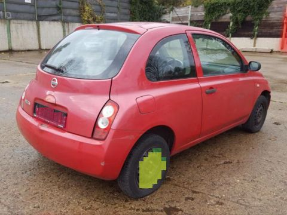

Condición (solo para el revisor): C2 · etiqueta controlada: SUSPICIOUS

En esta descripción, el vehículo no está libre de rayones. Esta descripción corresponde al daño observado.
SUPPORTED — SUPPORTED: 0.588 · SUSPICIOUS: 0.412 · INSUFFICIENT: 0.000
U = 0.678 (τU = 0.679) · c̄ = 0.625 (τc = 0.000)
| nodo | tipo | g | c,q,r,u |
|---|---|---|---|
| 0 | claim | 0.169 | [0.25, 1.0, 0.6803, 0.009] |
| 1 | source | 0.911 | [1.0, 0.9106, 1.0, 0.0] |
| 2 | visual | 0.119 | [1.0, 0.6811, 0.5441, 0.6797] |
| 3 | visual | 0.006 | [1.0, 0.4076, 0.0909, 0.8286] |
| 4 | visual | 0.038 | [1.0, 0.4021, 0.5441, 0.8277] |
| 5 | forensic | 0.015 | [1.0, 0.9106, 0.8683, 0.9816] |
| origen | destino | relación | peso g·p |
|---|---|---|---|
| 0 | 2 | support | 0.118 |
| 0 | 3 | unknown | 0.006 |
| 0 | 4 | support | 0.037 |
| 3 | 4 | overlap | 0.035 |